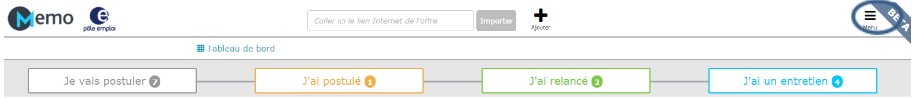
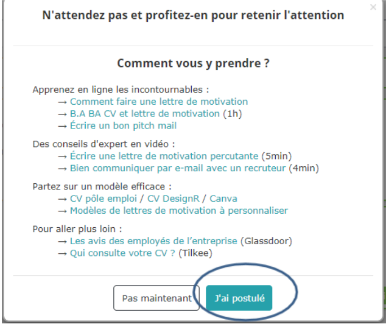
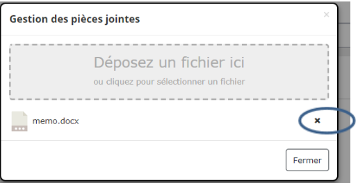

LES QUESTIONS LES PLUS FREQUENTES
L'utilisation de MEMO est-elle obligatoire ?
Revenir au sommaire
L'utilisation du service MEMO n'est pas obligatoire.Son utilisation ou non n'a aucune incidence sur votre éventuelle inscription auprès de Pôle emploi.
Vous pouvez, à tout moment, supprimer votre compte ou vous désinscrire des e-mails en allant sur votre compte : "Menu > Paramètres" ou en cliquant sur le lien "se désinscrire des notifications" qui se trouve en bas de chaque e-mail envoyé par MEMO.
MEMO ne convient pas à mon profil, que faire ?
Revenir au sommaire
Il est possible que MEMO ne convienne pas à votre situation personnelle ou professionnelle.
Son utilisation ou non n'a aucune incidence sur votre éventuelle inscription auprès de Pôle emploi.
Vous pouvez, à tout moment, supprimer votre compte ou vous désinscrire des e-mails en allant sur votre compte : "Menu > Paramètres" ou en cliquant sur le lien "se désinscrire des notifications" qui se trouve en bas de chaque e-mail envoyé par MEMO.
Je souhaite répondre directement aux emails de MEMO pour faire part de ma situation personnelle
Revenir au sommaire
Les e-mails que vous recevez sont automatiquement générés en fonction de votre situation. Il ne faut donc pas y répondre directement pour faire part de votre situation personnelle mais plutôt entrer en contact avec votre conseiller Pôle emploi.
Notez que l'utilisation du service MEMO n'est pas obligatoire. Son utilisation ou non n'a aucune incidence sur votre éventuelle inscription auprès de Pôle emploi.
Vous pouvez cependant nous contacter directement pour nous faire part d'une question ou suggestion relative à l'utilisation de ce service.
Vous pouvez, à tout moment, supprimer votre compte ou vous désinscrire des e-mails en allant sur votre compte : "Menu > Paramètres" ou en cliquant sur le lien "se désinscrire des notifications" qui se trouve en bas de chaque e-mail envoyé par MEMO.
Faut-il être inscrit à Pôle emploi pour utiliser MEMO ?
Revenir au sommaire
MEMO est un service ouvert à tous.Vous pouvez utiliser ce service que vous soyez, ou non, inscrit à Pôle emploi.
Mes données sont-elles visibles par Pôle emploi ?
Revenir au sommaire
Les données que vous saisissez dans MEMO sont confidentielles.Pôle emploi n'y a pas accès, sauf si vous choisissez de partager votre tableau de bord avec votre conseiller.
Dans ce cas, vous lui transmettez un lien qui lui donne accès à la visualisation de votre tableau de bord pendant 30 jours.
Y-a-t-il un lien avec ce que je saisi sur mon espace personnel sur pole-emploi.fr ?
Revenir au sommaire
Il n'y a pas de lien entre votre compte MEMO et votre espace personnel.Aussi, si vous saisissez une indisponibilité ou une reprise d'emploi dans votre espace personnel, l'information ne sera pas reprise automatiquement dans MEMO.
Il est donc possible que le service vous relance pour savoir où vous en êtes de votre recherche d'emploi.
J’ai trouvé un emploi : je ne souhaite plus utiliser MEMO
Revenir au sommaire
Clôturez la candidature concernée en cliquant sur « Actions » puis « Gagné ».Ensuite, vous pouvez au choix : supprimer votre compte ou vous désinscrire des e-mails en allant sur votre compte : "Menu > Paramètres" ou en cliquant sur le lien "se désinscrire des notifications" qui se trouve en bas de chaque e-mail envoyé par MEMO.
LES E-MAILS DE MEMO
Quels sont les e-mails envoyés par MEMO ?
Revenir au sommaire
MEMO est un service conçu pour vous aider à vous organiser et à suivre vos démarches de recherche d'emploi. Dans ce cadre, il envoie des e-mails automatiques à votre adresse électronique renseignée à l'ouverture du compte.Ces e-mails peuvent être de plusieurs sortes :
- Des conseils par rapport à votre recherche d'emploi
- Tous les lundis, MEMO analyse l'état de votre tableau de bord et vous propose, en fonction de votre situation, une liste d'actions concrètes à mener en priorité.
- En fonction de l'activité de votre compte, d'autres e-mails de conseils peuvent vous être envoyés pour vous aider à booster votre recherche d'emploi.
- Lorsque vous enregistrez la date d'un entretien, un e-mail contenant un fichier "calendrier" vous est envoyé : il vous permet d'enregistrer automatiquement le rendez-vous dans votre calendrier de messagerie ou de smartphone/tablette.
- Afin de vous accompagner aux différentes étapes du processus de recrutement, des e-mails contenant des conseils vous seront envoyés pour la préparation à l'entretien, le remerciement après l'entretien et la relance pour obtenir une réponse de l'entreprise.
- Des relances par rapport à l'activité sur votre compte
- Si MEMO se rend compte qu'aucune activité n'est enregistrée sur votre compte, il va vous relancer par e-mail. Ces relances sont générées automatiquement en fonction des informations saisies sur MEMO.
- Lorsque vous enregistrez un entretien, MEMO reviendra vers vous au bout de 15 jours pour savoir quelle réponse a donné l'employeur.
Comment gérer les e-mails ?
Revenir au sommaire
Vous pouvez, à tout moment, vous désinscrire des e-mails en allant sur votre compte : "Menu > Paramètres" ou en cliquant sur le lien "se désinscrire des notifications" qui se trouve en bas de chaque e-mail envoyé par MEMO.
Vous avez la possibilité de répondre directement à chaque e-mail envoyé par MEMO, mais n'êtes pas obligé de le faire. En effet, les e-mails sont générés automatiquement en fonction de l'activité de votre compte afin de vous inviter à retourner sur MEMO. Il n'est pas nécessaire d'y répondre pour justifier de vos démarches.
J'ai reçu un e-mail avec des informations incorrectes
Revenir au sommaire
Les e-mails de MEMO sont automatiquement générés d'après les informations présentes dans votre espace personnel MEMO.
Dans certains cas, il arrive que l'annonceur indique son propre nom dans le champ "entreprise", cela pouvant porter à confusion à la restitution de certains e-mails générés.
Je reçois trop d'e-mails de MEMO
Revenir au sommaire
Vous pouvez à tout moment vous désinscrire des e-mails en allant sur votre compte : "Menu > Paramètres" ou en cliquant sur le lien "se désinscrire des notifications" qui se trouve en bas de chaque e-mail envoyé par MEMO.
COMMENT ÇA MARCHE
Je ne comprends pas à quoi sert MEMO
Revenir au sommaire
MEMO est un tableau de bord intelligent qui vous permet de centraliser vos démarches pour mieux les suivre et bénéficier de conseils au bon moment.
Voici une vidéo de deux minutes qui reprend les principales fonctionnalités du service:
https://www.youtube.com/watch?v=Cr-hCaqO298
Est-ce que MEMO fonctionne uniquement avec les offres de Pôle emploi ?
Revenir au sommaire
MEMO a été conçu pour centraliser tous les types de candidatures.A ce titre, vous pouvez ajouter :
- Des offres trouvées en ligne, et ce, quel que soit le jobboard, pas uniquement pole-emploi.fr .
- Des candidatures spontanées.
- Des démarches réseau.
- Tout autre type de candidatures.
Comment ajouter une candidature ?
Revenir au sommaire
Importer des offres en ligne
Il vous suffit de faire copier l'adresse Internet de l'offre et de la coller dans le champ d'import rapide qui est au-dessus de votre tableau de bord à gauche du bouton Importer. Vous devrez cliquer sur ce bouton pour lancer l'import.

A noter que l'adresse d'une offre est ce qui apparaît dans la barre d'adresse de votre navigateur Internet lorsque vous visualisez l'offre sur le site Monster ou autre. Attention à bien être positionné sur une offre et pas sur une liste d'offre.

Pour vous aider, vous pouvez visionner la vidéo de présentation du service: https://www.youtube.com/watch?v=Cr-hCaqO298
Une vidéo de présentation de l'outil est disponible à partir du Menu (en haut à droite) sur le lien "Comment ça marche".
Ajouter un autre type de candidatures
Vous pouvez également ajouter :
- Une candidature spontanée.
- Une approche réseau.
- Tout autre type de démarche.
Cliquer sur le "+" à côté du champ d'import rapide

Cliquer sur Menu > ajouter une candidature et suivre les indications

Quels avantages pour MEMO par rapport à mon suivi sur Excel ou sur papier ?
Revenir au sommaire
MEMO a été réalisé avec l'appui de personnes à la recherche d'un emploi, de conseillers et d'experts afin justement de remplacer les tableaux Excel et les suivis papier en proposant des fonctionnalités supplémentaires.
MEMO vous permet de rendre "intelligent" et efficace un simple tableau afin :
- de sauvegarder tous les détails d'une offre d'emploi en collant simplement le lien internet de l'offre et de conserver les données de l'offre même si celle-ci n'est plus en ligne sur le site d'origine. Par exemple, vous trouvez une offre sur le site Monster. Sur votre fichier Excel, vous copiez le lien vers l'offre. Dans 3 semaines, l'employeur vous appelle pour un entretien. Vous souhaitez vous préparer et relire pour cela l'offre initiale, mais, lorsque vous cliquez sur le lien, celui-ci n'existe plus car Monster a interrompu la diffusion de l'offre. Vous n'avez alors aucun moyen de retrouver le détail. Avec MEMO, les données sont sauvegardées, même si l'offre n'est plus en ligne.
- de visualiser directement lorsqu'une offre n'est plus en ligne.
- de centraliser toutes vos démarches : réponses aux offres, candidatures spontanées, démarches réseaux ou autres.
- De lier les documents importants à chaque candidature pour les retrouver rapidement lors d'un contact avec l'entreprise (CV, lettre e motivation…).
- d'être prévenu au bon moment lorsqu'il faut relancer, remercier, se préparer à un entretien et d'avoir en un clic les bons conseils.
- de savoir quelles sont les actions à mener en priorité pour maximiser les chances de retrouver plus rapidement un emploi : des alertes sont envoyées par e-mail pour vous rappeler les étapes clés de vos démarches (vous rappeler un entretien, vous conseiller sur les actions à engager).
- de partager rapidement et de manière sécurisée votre tableau de bord avec qui vous voulez, grâce à un lien de partage.
Comment archiver une fiche ou indiquer la réponse à une candidature ?
Revenir au sommaire
Vous avez plusieurs possibilités pour archiver une fiche de votre tableau de bord ou indiquer la réponse de l'entreprise :
depuis votre tableau de bord, cliquez sur le bouton "actions" de la carte concernée. 3 choix vous sont alors proposés :
- gagné : vous avez eu le poste.
- refus : vous n'avez pas été retenu.
- archiver : vous souhaitez archiver la candidature pour un autre motif.

- sur la gauche, cliquez sur l'une des trois icônes "gagné", "refus" ou "archiver".
- sur la droite, ajoutez un événement, sélectionnez "archiver" et choisissez le motif d'archivage dans la liste.

Comment ajouter des notes libres ?
Revenir au sommaire
Vous avez deux possibilités pour ajouter des notes libres :
- lorsque vous allez sur le détail de la fiche candidature, à droite, vous avez un bouton "ajouter un événement". Dans la liste déroulante, choisissez "note", écrivez votre note dans le champs commentaire, puis validez. La note apparaîtra ensuite à droite avec l'historique des événements.
- lorsque vous êtes dans le détail de la fiche, tout en bas, il y a un encart "notes diverses". Il vous suffit de cliquer sur le bouton "modifier" en haut à gauche pour pouvoir compléter cette partie.
Comment changer les candidatures de colonne ?
Revenir au sommaire
Vous avez trois moyens de le faire :
- sur un ordinateur, vous pouvez sélectionner une fiche, maintenir le bouton gauche de la souris appuyé, déplacer le curseur de votre souris dans la colonne qui convient et relâcher le bouton (Note : cette fonctionnalité est désactivée sur un écran de téléphone).
- dans le menu d'action d'une fiche, vous pouvez cliquer sur le bouton "Ajouter un événement", selon l'événement choisi votre fiche sera automatiquement déplacée dans la colonne correspondante.
- Lorsqu'un conseil portant le nom de l'étape suivante apparaît sur une carte (par exemple "conseil : postuler" dans la colonne "je vais postuler"), vous pouvez indiquer directement avoir réalisé l'étape depuis la fenêtre de conseils. La carte changera alors de colonne.

Comment ajouter ou supprimer des pièces jointes ?
Revenir au sommaire
Pour ajouter une pièce jointe, allez dans le détail de votre fiche de candidature et cliquez sur l'icône "fichiers" qui se trouve à gauche.

Une fenêtre s'ouvre, vous permettant d'aller choisir les fichiers concernés sur votre ordinateur.
Pour supprimer ces fichiers, il faut à nouveau cliquer sur l'icône fichiers pour ouvrir le gestionnaire des fichiers, puis sur la croix à côté du document concerné

POUR ALLER PLUS LOIN
A quand l'application mobile ?
Revenir au sommaire
Le site https://memo.pole-emploi.fr est "responsive", cela veut dire que l'affichage s'adapte au support utilisé. Il peut donc être utilisé en l'état sur "smartphone".
L'avantage de ce procédé est qu'il n'est pas nécessaire de télécharger une application et donc de prendre de l'espace de stockage sur le mobile. Vous avez également accès à la dernière version du site sans passer par une mise à jour de l'application.
Comment imprimer mon tableau de bord ?
Revenir au sommaire
MEMO a été pensé pour que l'impression ne soit plus nécessaire: vous avez la possibilité de générer un lien de partage depuis le menu, qui vous permet d'envoyer une "photo en temps réel" de votre tableau de bord à qui vous souhaitez. Notez que vous pouvez imprimer le contenu d'une candidature en ouvrant celle-ci et en appuyant sur les touches "Ctrl + P" de votre clavier.
Comment partager mon tableau de bord ?
Revenir au sommaire
Vous avez la possibilité de partager votre tableau de bord avec qui vous le souhaitez.
Pour cela, allez dans menu > partager mon tableau de bord.
Une fenêtre s'ouvre, contenant un lien.
Cliquez sur "copier le lien" puis collez ce lien dans un e-mail ou un message à destination de la personne à qui vous souhaitez donner accès à vos démarches.
Le lien est valable pendant 30 jours. Il permet à la personne d'avoir accès à votre tableau de bord en temps réel et "en lecture seule" ainsi qu'à tous les éléments que vous y avez enregistrés (notes et fichiers compris). La personne ne pourra apporter aucune modification sur votre tableau de bord.
Au bout de 30 jours, le lien ne sera plus actif.
Comment est organisé le tri ?
Revenir au sommaire
Les candidatures s'affichent par date mais avec un autre niveau de tri:
- En premier s'affichent, de la plus récente à la plus ancienne, les candidatures qui ont un conseil (postuler, relancer...) car ce sont celles sur lesquelles il faut agir en priorité.
- s'affichent ensuite les candidatures marquées d'une étoile (en haut à droite des cartes), que vous avez identifiées comme étant prioritaires.
- puis, viennent, de la plus récente à la plus ancienne, les candidatures qui n'ont pas encore de conseil.
- enfin, tout en bas, vous avez les candidatures qui affichent le conseil "archiver" (aucune action sur la carte depuis au moins 30 jours).
CAS PARTICULIERS
J'ai deux comptes sur MEMO, que faire ?
Revenir au sommaire
Il vous suffit de supprimer l'un des deux comptes depuis le "menu > paramètres" du compte concerné. Toutes les données seront définitivement supprimées.
Afin de s'assurer que vous n'avez pas demandé la suppression du compte par erreur, un e-mail de confirmation vous sera envoyé.
J'ai oublié mon mot de passe ou celui-ci ne fonctionne pas
Revenir au sommaire
Allez sur https://memo.pole-emploi.fr, cliquez sur "se connecter" et "mot de passe oublié" puis renseignez votre adresse e-mail.Un e-mail vous est envoyé : il contient un lien qui permettra de générer un nouveau mot de passe. Cliquez une seule fois sur ce lien.
Attention, ce lien n’est valable que 24 heures.
Comment modifier mon mot de passe ?
Revenir au sommaire
Vous pouvez modifier votre mot de passe depuis le menu > paramètres
Comment supprimer mon compte ?
Revenir au sommaire
Vous pouvez supprimer votre compte depuis le menu > paramètres
Toutes les données seront définitivement supprimées.
Afin de s'assurer que vous n'avez pas demandé la suppression du compte par erreur, un e-mail de confirmation vous sera envoyé.
Le service semble fonctionner de façon anormale
Revenir au sommaire
Si vous constatez que le service fonctionne de façon anormale et qu'un rafraîchissement de la page (touche F5) ne résout pas le souci, contactez-nous en cliquant ici et décrivez le souci rencontré en nous précisant le périphérique (PC, smartphone, tablette...) et le navigateur que vous utilisez. Une capture écran pourra vous être demandée ultérieurement.
Le service importe des candidatures que je ne veux pas importer
Revenir au sommaire
Vérifiez que vous ouvrez bien le service MEMO avec l'adresse https://memo.pole-emploi.fr et que votre outil de navigation ne rajoute pas des paramètres après cette adresse. Ce sont ces paramètres en trop qui peuvent donner l'instruction à MEMO de démarrer un import.